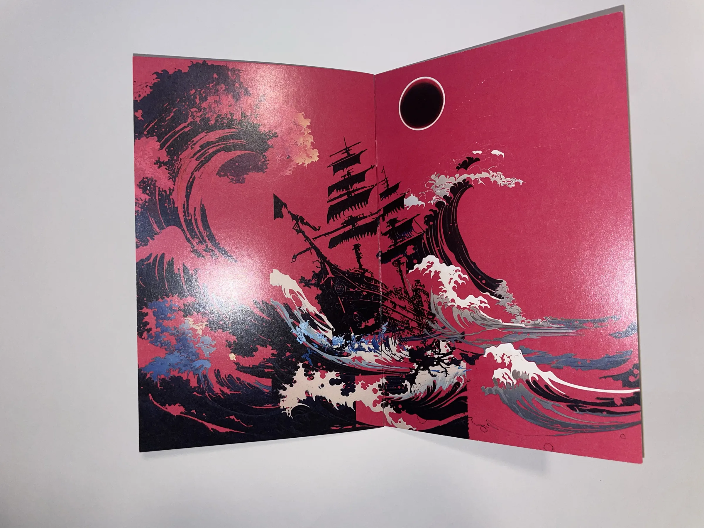

Zine — BarryMade
PS Zines
- Kind
- Zine
- Built with
- Photoshop, print
- When
- PLACEHOLDER
Overview
Zines designed in Photoshop from layered abstract imagery, then printed.

Zine — BarryMade
Zines designed in Photoshop from layered abstract imagery, then printed.
Photographs